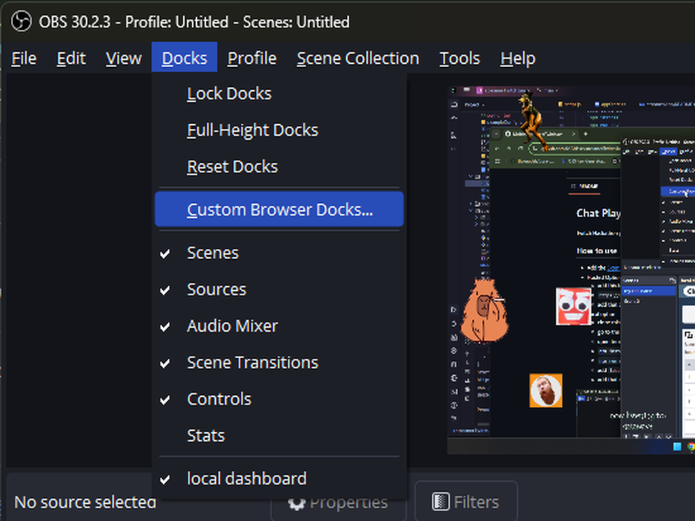
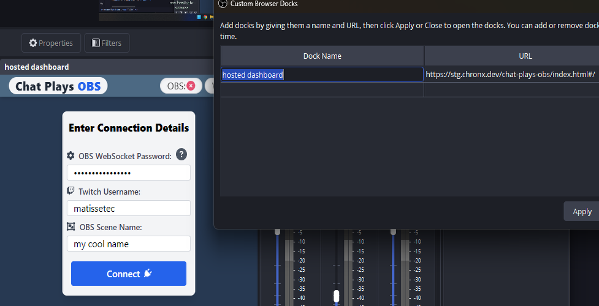

Extension Configuration
Chat Plays OBS
Follow the steps below to integrate Chat Plays OBS with your OBS setup:
-
Open OBS and navigate to the top menu. Click on Docks > Custom Browser Docks.

Custom Browser Docks in OBS
-
Enter a recognizable name for the dock and paste the following URL:
https://stg.chronx.dev/chat-plays-obs/index.html#/
Click Apply. A new window dock with your selected name should appear.
-
(Optional) Add the dock to a specific area in OBS if you want to make live changes.

Hosted Dock in OBS
-
Follow the instructions provided in the newly created dock to complete the setup.
If you prefer to run this locally, you can clone the project from the GitHub repository. Note that you will need npm installed to run it locally.